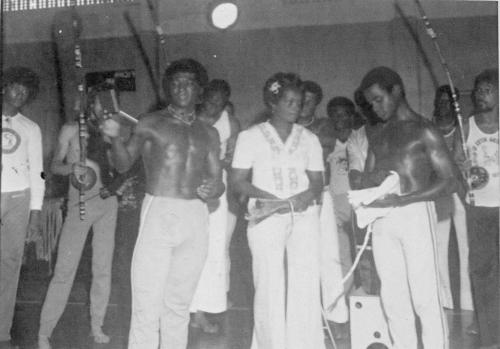
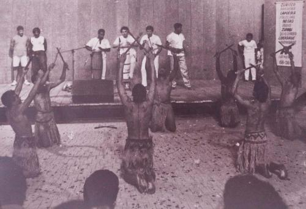
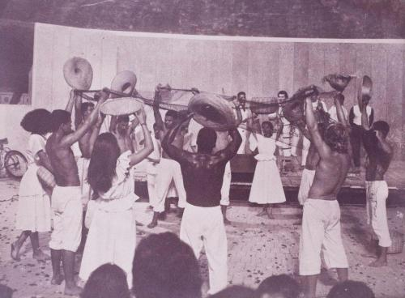
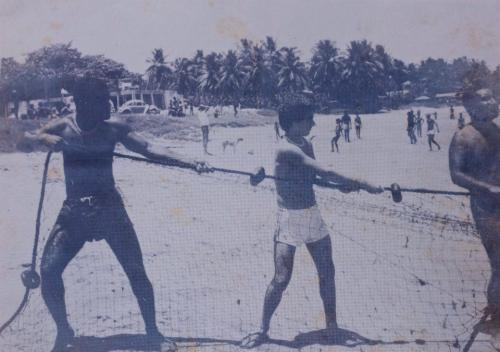
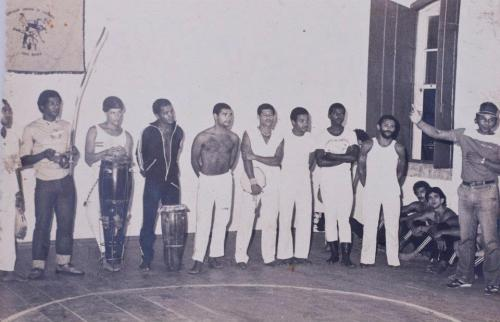
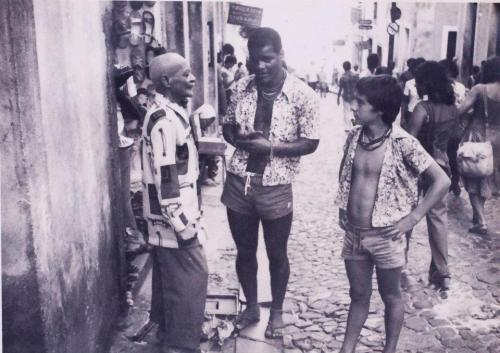

и луис такой молодой, и юный АСКАБ впереди
тут недавно выложилась в фейсбучек серия кульных олдовых фото
бандейра получает степень местре. слева направо — mestre corisco, edileuza (сестра бандейры и жена куришку), бандейра. редкий кадр когда местре держит в руках белую веревку, которую впоследствии не одевал.

дальше
макулеле

пушада ди реде

pesca do xareu. контра-местре маринейро (брат бандейры) тащит сеть в баие

тренировка АСКАБ в сантосе. загадка. найдите на фото бандейру.

и снова близнец контра-местре маринейро. на сей раз с паштиньей.

п.с. ждем теперь, что у бандейры дойдут руки до старых видео:-)